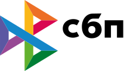

Ipoteka bilan kvartira oldi-sotdi bitimini rasmiylashtirdik. Hujjatlar ro‘yxatini — EGRN ko‘chirmasi va turmush o‘rtoqlarning roziligini — oldindan yuborishdi, hammasi bir tashrifda bajarildi.
Sankt-Peterburgdagi notarial idora
NotariusOlga Vitoldovna Ryabova
Plovdivskaya ko‘chasi, 9 · metro Kupchino. Sankt-Peterburg notarial okrugi.
192281, Sankt-Peterburg, Plovdivskaya ko‘chasi, 9
Hozir ochiq
Notarial xizmatlar
Qanday yordam bera olamiz
O‘nta yo‘nalish va 70 dan ortiq notarial harakat. To‘liq ro‘yxatni ko‘rish uchun turkumni bosing.
Notarius haqida
Notarius haqida ma’lumot
Olga Vitoldovna Ryabova — Sankt-Peterburg notarial okrugi notariusi. Reyestr raqami 78/223-н/78, litsenziya 125-son, 23.04.1993, 23.06.1993 dagi 207-к-son buyruq.
Idora Plovdivskaya ko‘chasi, 9 manzilida joylashgan — Frunze tumani, Kupchino. Notarius va idora xodimlari har bir harakatning huquqiy oqibatlarini tushuntiradi, hujjatlarni tekshiradi va manfaatlaringizni himoya qiladigan bitim shaklini tanlashga yordam beradi.
Notarius bitimlar, ishonchnomalar va vasiyatnomalarni tasdiqlaydi, meros ishlarini yuritadi, imzoning haqiqiyligi va nusxalarning to‘g‘riligini guvohlantiradi, hujjatlarni Rosreestr va Soliq xizmatiga (FNS) elektron shaklda topshiradi.
Notarial hujjat — bugun huquqlaringizning himoyasi va ertangi kunga ishonch.
Reyestr raqami78/223-н/78
Litsenziya125-son, 23.04.1993
Notarial okrugSankt-Peterburg
A’zoSankt-Peterburg notarial palatasi
To‘lovNaqd pulBank kartalari

Qadam-baqadam
Qabul tartibi
Qo‘ng‘iroqdan tayyor hujjatgacha — besh qadam.
- 1Yozilish
Qo‘ng‘iroq qiling yoki saytda so‘rov qoldiring. Xizmat va qulay vaqtni aniqlashtiring.
- 2Hujjatlar
Yozilishda aytilgan ro‘yxat bo‘yicha hujjatlarni tayyorlang. Asl nusxalar shart.
- 3Maslahat
Notarius huquqiy oqibatlarni tushuntiradi, hujjatlar va tomonlarning shaxsini tekshiradi.
- 4Tasdiqlash
Hujjat notarius huzurida imzolanadi va tasdiqlovchi yozuv qo‘yiladi.
- 5Natija
Tayyor hujjatni olasiz. Zarur bo‘lsa — Rosreestrga elektron topshirish.
Fikrlar
Mijozlar nima deydi
Namoyish uchun mazmun: fikr matnlari — dizayn namunalari. Haqiqiy fikrlar Yandex Xaritalar va 2GIS dan olinadi — havola quyida.
4.4
Yandex Xaritalar va 2GIS fikrlari asosida. Baho — 33 fikr bo‘yicha 5 dan 4.4.
Yandex Xaritalardagi barcha fikrlar 2GIS dagi fikrlarMerosni qabul qilish uchun yozildik; butun tartibni va meros huquqi guvohnomasi uchun qanday hujjatlar kerakligini tushuntirib berishdi.
Kupchino hududidagi keksa qarindoshimizga vasiyatnoma uchun notariusni uyga chaqirdik — belgilangan vaqtda kelishdi.
Nikoh shartnomasini rasmiylashtirdik; karta ham, naqd pul ham qabul qilindi, idora Kupchino metrosi yonida.

Savol-javob
Ko‘p so‘raladigan savollar
Javob topmadingizmi — +7 (812) 708-19-17 ga qo‘ng‘iroq qiling.
Navbatda kutmaslik uchun +7 (812) 708-19-17 telefoni yoki saytdagi shakl orqali oldindan yozilishni tavsiya qilamiz. Qabul vaqti: Du 10:00–17:00; Se 11:00–18:00; Chor — qabul yo‘q; Pay 10:00–17:00; Ju 10:00–17:00; Sha, Yak — dam olish.
Har doim — har bir ishtirokchining pasporti. Qolgani harakatga bog‘liq: ko‘chmas mulk bitimi uchun — mulk huquqini tasdiqlovchi hujjatlar, ishonchnoma uchun — vakilning ma’lumotlari, meros uchun — o‘lim guvohnomasi va qarindoshlikni tasdiqlovchi hujjatlar. Aniq ro‘yxat yozilishda aytiladi.
Naqd pul va bank kartalari.
Yo‘q, shanba va yakshanba — dam olish kunlari.
Ha, notariusning chiqishi mumkin — uyga, kasalxonaga, tashkilot ofisiga. Vaqti va shartlari +7 (812) 708-19-17 telefoni orqali kelishiladi.
Ha. Bitim tasdiqlangach, notarius hujjatlarni Rosreestrga elektron shaklda yuboradi — MFC ga bormasdan va qisqartirilgan ro‘yxatdan o‘tkazish muddati bilan.
Narx qonunda belgilangan notarial tarif va Sankt-Peterburgning barcha notariuslari uchun yagona bo‘lgan huquqiy va texnik xizmatlar to‘lovidan iborat. Sizning harakatingiz bo‘yicha aniq summa yozilishda aytiladi.
Manzil: Plovdivskaya ko‘chasi, 9, Frunze tumani, Kupchino. Metro: Kupchino. Saytning istalgan joyida manzilni bosing — yo‘nalish bilan Yandex Xarita ochiladi.
Notarial harakat rus tilida amalga oshiriladi. Agar ishtirokchi rus tilini bilmasa, tarjimon kerak bo‘ladi — uning ishtiroki va ma’lumotlari hujjatda ko‘rsatiladi. Bu haqda yozilishda oldindan kelishib oling.
Yo‘q. Ishonchnoma uchun ishonch bildiruvchining pasport bilan kelishi kifoya; vakil haqida pasport ma’lumotlari kerak. Vakil ishonchnomani keyinroq oladi — shaxsan yoki ishonch bildiruvchi orqali.

Aloqa
4.4Yandex Xaritalarda 33 fikr
Bizni qanday topish mumkin
- Manzil192281, Sankt-Peterburg, Plovdivskaya ko‘chasi, 9(taksi uchun: ул. Пловдивская, д. 9)
- MetroKupchino
- Pochta03200191@npspb.ru
- Qabul vaqtiDu 10:00–17:00; Se 11:00–18:00; Chor — qabul yo‘q; Pay 10:00–17:00; Ju 10:00–17:00; Sha, Yak — dam olishIsh vaqti
- To‘lovNaqd pulBank kartalari
Qabulga yozilish
Shaklni to‘ldiring — pochta ilovangizda tayyor xat ochiladi. Yoki +7 (812) 708-19-17 ga qo‘ng‘iroq qiling.